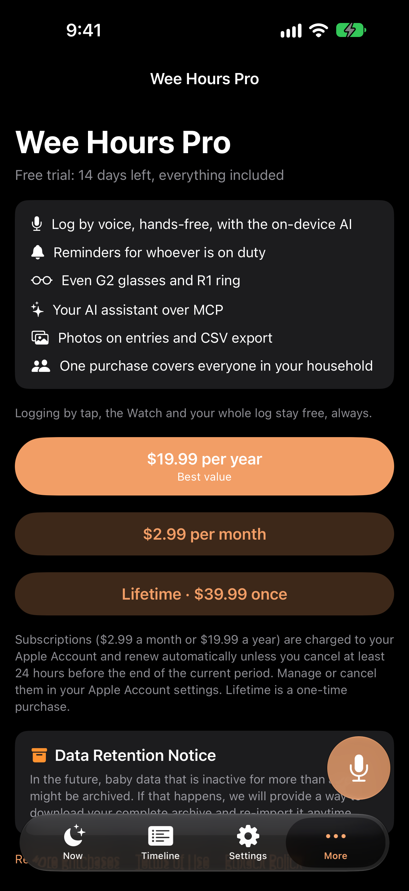
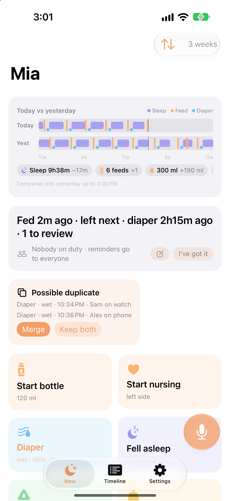
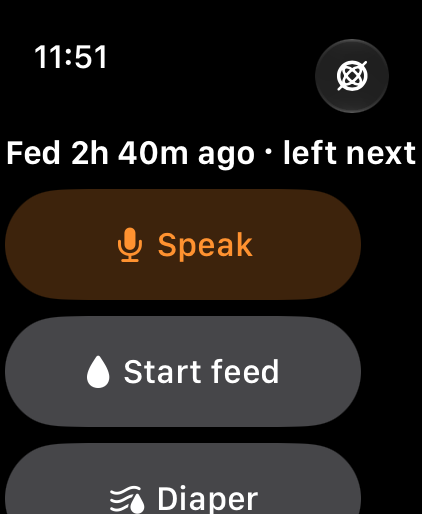

Release prep · 2026-11-15 · owner chose A (Wee Hours Pro) · submitted 2026-11-15
Wee Hours iOS release: choices for your review
Wee Hours' App Store listing is ready apart from one decision: how it charges. I built Wee Hours Pro (free download, 14-day household trial, then monthly, yearly or lifetime) on a local branch, following the billing design in projects/weehours/docs/decisions.md, because you moved Headway, FitLoop and G2 Digest to in-app Pro yesterday. Nothing is pushed or submitted: say which model you want and I finish the release; you press Submit.
Verified
- Worker purchase checks: 5 new tests in
projects/weehours/services/web/test/appstore.test.ts(Apple chain, one parent's purchase covers the household, lifetime beats yearly, refund, restore into another household); all Wee Hours suites pass (TypeScript 26 + 19 + 22, LogCore 97). - The iPhone app builds (simulator, Debug) with Pro, and the Pro screen opens with the trial status (screenshot in §1).
- The database change applies locally; the isolation and graduation checks pass.
- App Store Connect: every field above read back by API or on the page after saving; the three products are Ready to Submit, with the Pro screen as their review screenshot.
Not verified
- A real purchase. The products load from Apple's sandbox with their prices, but nobody bought one: a purchase needs a person at Apple's sheet (a TestFlight build buys free with your own Apple Account).
- The locks after a trial ends. The rules are LogCore's tested
Entitlement.allows; the app's use of them was checked by reading the code, not by running an expired trial. - Watch screenshot data is a demo status line (watch simulators can't sync with an unsigned phone build).
The pricing model I prepared, and the alternative
The 10-28 prep assumed a paid-upfront app with Family Sharing, but the price was never set and that wasn't your decision. The decision log's Billing row is your original request: subscription and a lifetime purchase, per household, 14-day trial, with tap logging free after the trial. The code already had that model (Entitlement in LogCore) and the server already kept one entitlement per household.
| A. Wee Hours Pro (prepared, recommended) | B. Paid upfront (the old plan) | |
|---|---|---|
| Download | Free | Paid, price not set yet |
| Trial | 14 days of everything per household, no card | None (buy first) |
| Free forever | Tap logging, the Watch, paired glasses, reading and editing the log | Everything, once bought |
| Paid | Voice, reminders, pairing new glasses, AI agent tokens, CSV export, photos | The app |
| Partner | Covered: the purchase belongs to the household | Covered only within Family Sharing |
| Prices (placeholders) | $2.99 / month · $19.99 / year · $39.99 lifetime | You pick one price |
| Work left | Push branch, database change, release 1.1.0, review screenshots of the Pro screen, submit with the products | Revert the store description and review notes to "no in-app purchases", set the price, attach build 1.0.0 (202611112316), submit |



Prices are your call. Mine: the newborn months are the busy ones (monthly), a year covers the first year (about 7 months of monthly), lifetime about two years. Change them in App Store Connect (In-App Purchases / Subscriptions) before submitting, or tell me the numbers.
How Pro works under the hood
- App (
apps/ios/App/Sources/Pro.swift): StoreKit 2 with the user id asappAccountToken; every Pro entry point callsAppModel.requirePro, which opens the Pro screen. A purchase on the phone counts at once, even before the server has it. - Worker (
services/web/src/worker/appstore.ts,purchases.ts): checks Apple's signature itself (same approach as Waypack, own copy), stores the purchase for the buyer's household, and keepsweehours.entitlementsat the household's best active purchase. Apple's renewal, expiry and refund notifications arrive at/appstore/notifications. - Database (
supabase/migrations/20261115073209_weehours_app_store_purchases.sql): two new tables, and clients can no longer call the old development purchase function. - Local-only households start their trial on the phone and keep a purchase on the phone.
What I changed in App Store Connect
| Products | Group "Wee Hours Pro": monthly (6835032644), yearly (6835032528); lifetime (6835033524). Ready to Submit, with review screenshots; not live until approved. |
| Notifications URL | https://weehours.hejitech.workers.dev/appstore/notifications (production and sandbox) |
| Description | Added "Free to log, Pro when you want more" with the subscription terms, Terms of Use and Privacy links (copy in apps/ios/AppStore/description.txt) |
| Review notes | Pro explained (the trial covers review); deletion wording corrected (the shared sign-in stays) |
| Price / availability | Free, 175 countries |
| Review contact | Same as the other HEJI apps |
| App Privacy | Name, Email, Health, Photos, Audio (glasses recordings until transcribed), Other User Content, User ID, Purchases: app functionality, linked, no tracking. Published. |
| Medical device | Declared not a regulated medical device |
| Screenshots | iPhone 6.9": Now, Timeline. Watch Ultra: home. |
The site text (landing, Terms, Support, Privacy) is rewritten for Pro on the branch only: it goes live when the branch is pushed.
What happens next
If you choose A (Pro): tell me "ship Wee Hours Pro" (with prices if you want others). I then:
- Merge
weehours-proand push (the Worker and site deploy). - Apply the database change to production (your OK is needed for this one).
- Cut Wee Hours 1.1.0 (TestFlight + glasses package), attach the build.
- Add the group, the two subscriptions and the lifetime product to a review draft (their review screenshots are already up).
- Leave the submission as a draft for you, or submit if you say so.
If you choose B (paid upfront): tell me the price; I revert the description and notes, delete the unused products, keep everything else, and attach build 1.0.0.
Either way, your steps:
- Pick A or B, and the prices (A chosen; placeholder prices kept)
- Create a Sign in with Apple key for
com.hejitech.weehours(developer portal → Keys) and give it to me for the Worker secrets; without it, account deletion can't revoke Apple's token (guideline 5.1.1(v)) - OK the production database change (A only; applied 2026-11-15)
- Sign in to App Store Connect in Chrome again (done 2026-11-15: the group, both subscriptions and lifetime are in the draft with version 1.1.0)
- Press Submit for Review (submitted 2026-11-15: Waiting for Review)
Your notes
Questions, corrections, decisions. Saved in this browser. Copy summary puts the whole report, your ticks and these notes on the clipboard for any agent, in this session or a new one.
Report: reports/2026-11-14-weehours-ios-release · serve with script/serve.sh